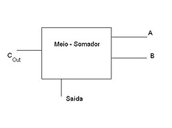
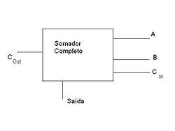

O que é um Half Adder?
O Half Adder, ou Meio Somador, é um circuito lógico digital que realiza a adição de dois bits de entrada. Ele produz duas saídas matemáticas: a Soma (Sum) e o Vai-um (Carry). É construído utilizando uma porta XOR e uma porta AND.
Apesar de ser extremamente útil, a grande limitação deste circuito é que ele não consegue receber o transporte (Carry-in) de uma soma anterior, sendo útil apenas para o bit menos significativo de uma operação.

O que é um Full Adder?
O Full Adder resolve o principal problema do seu antecessor adicionando uma terceira entrada: o Carry-in. Com essa terceira porta, é possível encadear vários circuitos em sequência para somar números de 8, 16, 32 ou 64 bits.

Componentes da Operação
- Entrada A (Primeiro bit a ser somado)
- Entrada B (Segundo bit a ser somado)
- Entrada Cin (Carry-in / Vai-um da casa decimal anterior)
- Saída Sum (Resultado do bit da soma)
- Saída Cout (Carry-out / Vai-um para a próxima casa)
Tabela Verdade
| A | B | Cin | Sum | Cout |
|---|---|---|---|---|
| 0 | 0 | 0 | 0 | 0 |
| 0 | 1 | 0 | 1 | 0 |
| 1 | 0 | 1 | 0 | 1 |
| 1 | 1 | 1 | 1 | 1 |
| Fonte: Wikipedia |